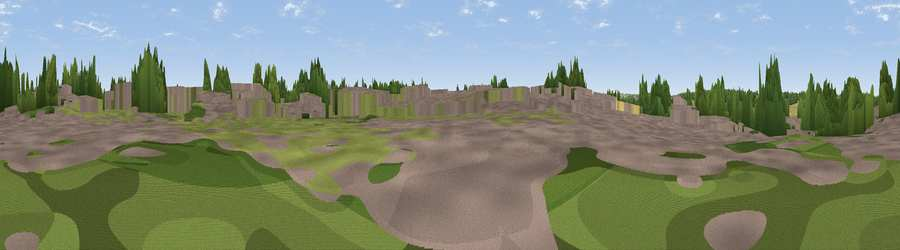

Quarrington Hill
#42912 in England · top 70% of its area beats it · near QuarringtonThe view, rendered

A 360° render of this exact spot computed from the terrain model, tree cover and land cover — summer colours, afternoon light, calibrated against photographs of famous viewpoints. Real trees, hedges and buildings will differ in detail.
The panorama
Grey silhouette: terrain skyline in each direction (720 bearings, Earth curvature and refraction included). Dashed green: skyline with trees (+15 m) and buildings (+8 m) as obstacles. Blue strip: how far the ground is visible on each bearing.
Where the view opens
Wedge length = distance to the farthest visible ground on that bearing (vegetation-aware). Rings at 10, 25 and 50 km.
What fills the view
48% cropland · 21% grassland · 19% woodland · 12% built-up
Angular shares of the visible panorama (visual magnitude), not map area. Landscape diversity 0.54 (0–1 Shannon).
Key numbers
More beautiful places nearby
The staircase of upgrades: each row has a higher view potential than everything closer. Driving times are estimates from straight-line distance, calibrated against real road routing — check an actual route before setting out.
| Place | Direction | Drive | Score |
|---|---|---|---|
| Viewpoint near North Rauceby | WNW · 5 km | ~11 min | 33.1 |
| Viewpoint near Aisby | SSW · 7 km | ~14 min | 38.1 |
| Normanton Hill | W · 10 km | ~19 min | 49.8 |
| Viewpoint near Belton | WSW · 12 km | ~22 min | 51.0 |
| Summerfield's Hill | W · 14 km | ~25 min | 51.5 |
| Viewpoint near Wellingore | NNW · 14 km | ~25 min | 52.5 |
| Viewpoint near Great Gonerby | WSW · 16 km | ~29 min | 62.0 |
| Viewpoint near Belvoir | WSW · 26 km | ~42 min | 70.8 |
52.99297, -0.42996 · source: osm peak · position refined by local search. Computed location — check access rights before visiting.